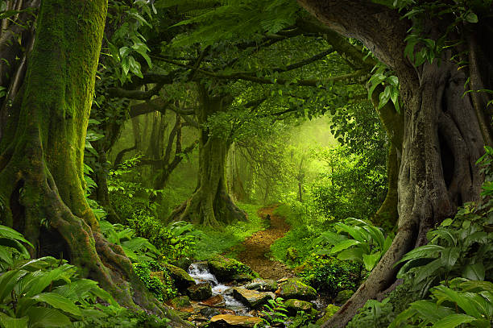
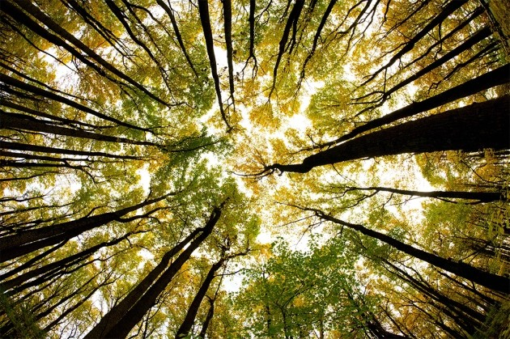
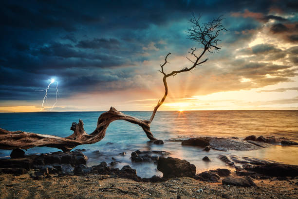
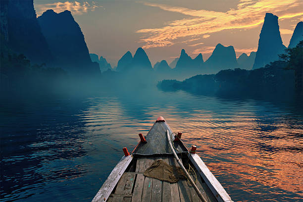

what is nature





Nature is made of everything we see around us –
trees, flowers, plants, animals, sky, mountains, forests and more. Human beings depend on nature to stay alive. Nature helps us breathe, gives us food, water, shelter, medicines, and clothes. We find many colors in nature which make the Earth beautiful.
Animals, fish and insects also get their food and shelter from nature. Different trees grow up due to sunlight and water provided by nature. Humans should stop causing harm to the elements of nature for their needs. Nature is very important to maintain the growth and balance of life on earth.